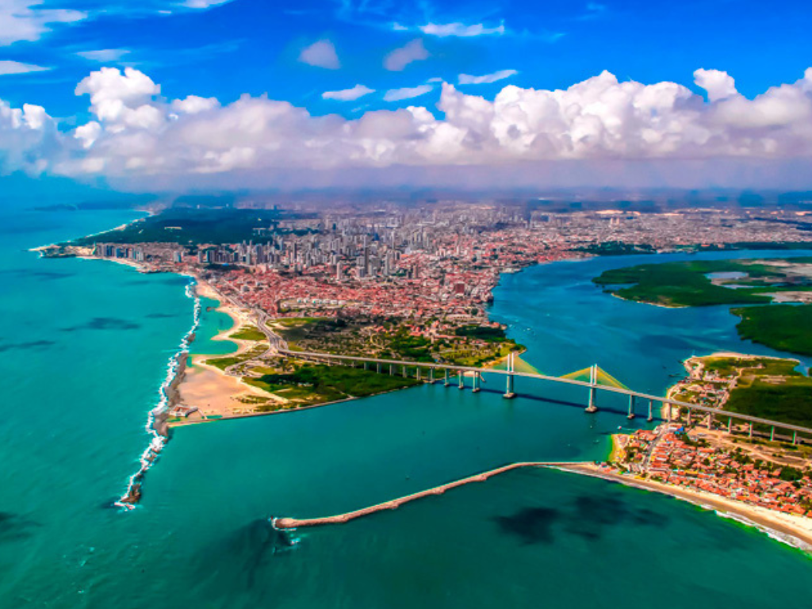

O Rio Grande do Norte é um estado localizado na região Nordeste do Brasil, conhecido por suas belas praias, dunas e clima ensolarado durante grande parte do ano. Sua capital, Natal, é famosa pelas paisagens naturais, pelo turismo e por pontos turísticos como o Forte dos Reis Magos. O estado também se destaca pelas dunas de Genipabu, muito procuradas para passeios de buggy, além das praias de águas cristalinas e da culinária típica baseada em frutos do mar. Culturalmente, o Rio Grande do Norte possui forte tradição no forró, no artesanato e nas festas populares, sendo um importante destino turístico do Nordeste brasileiro.

Voltar